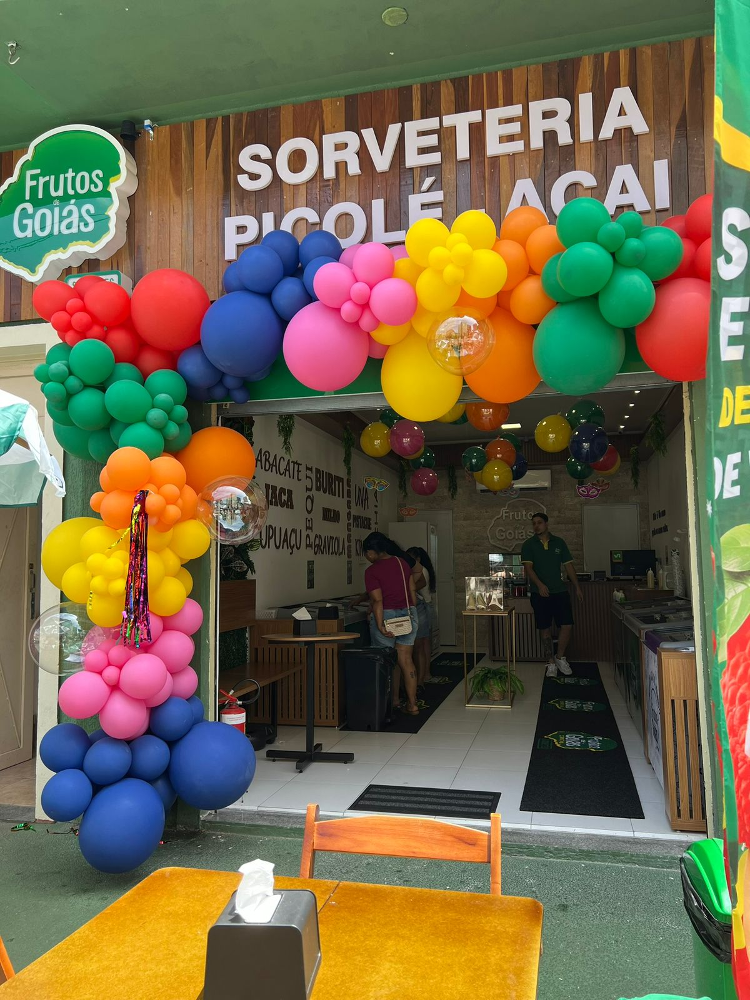
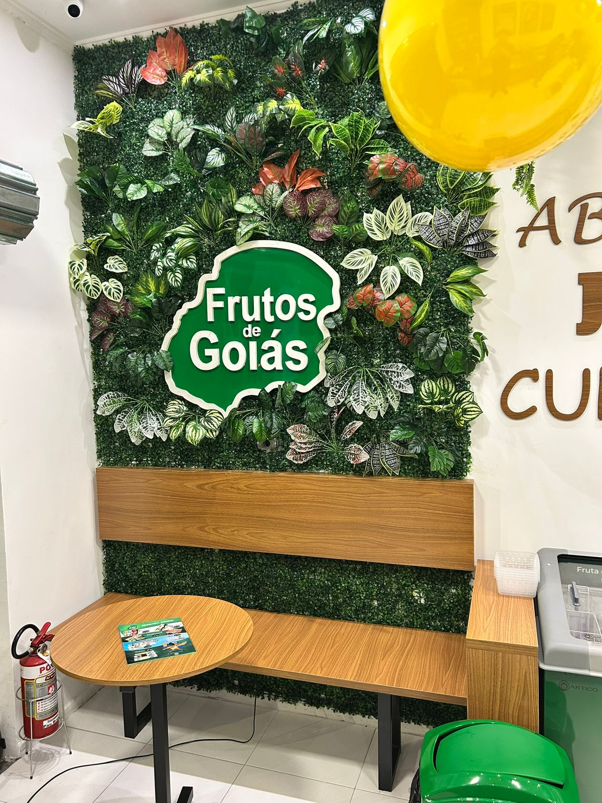
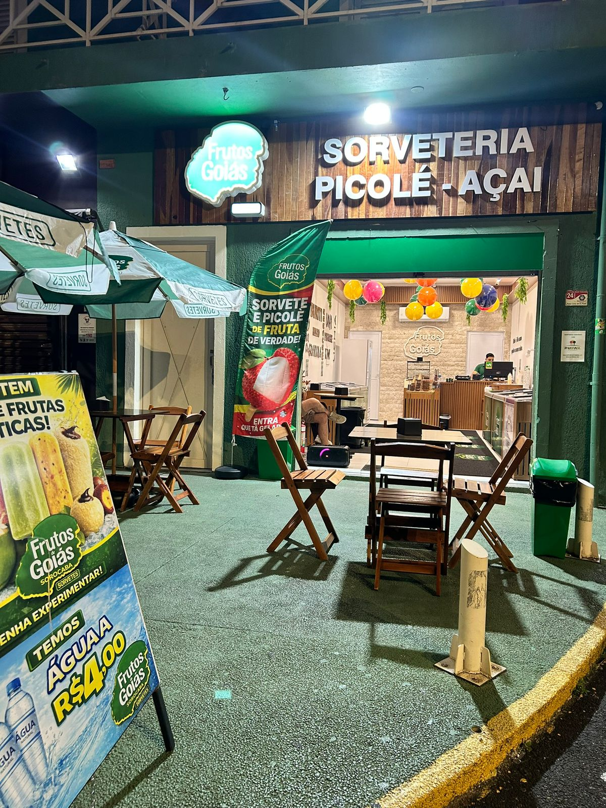
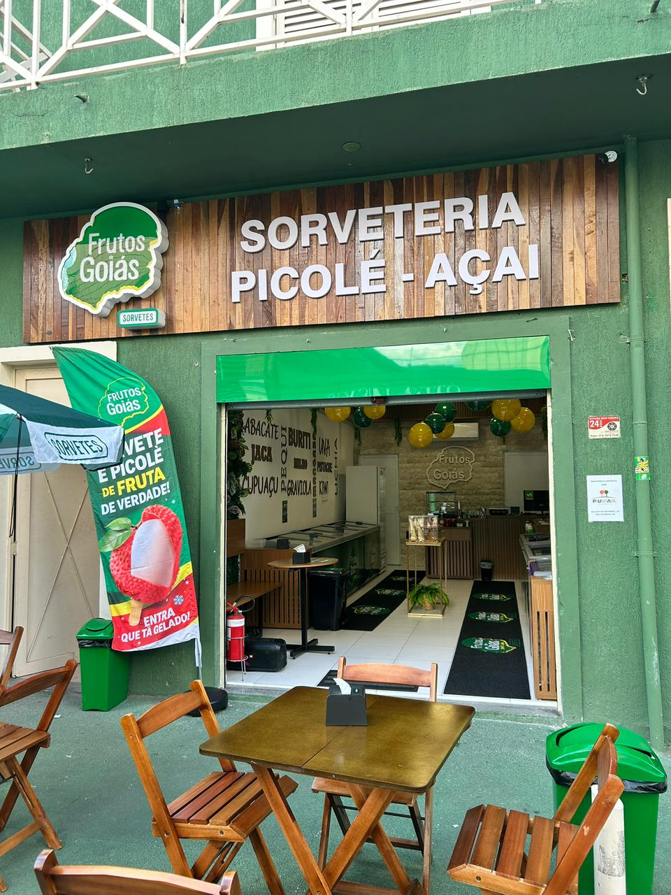
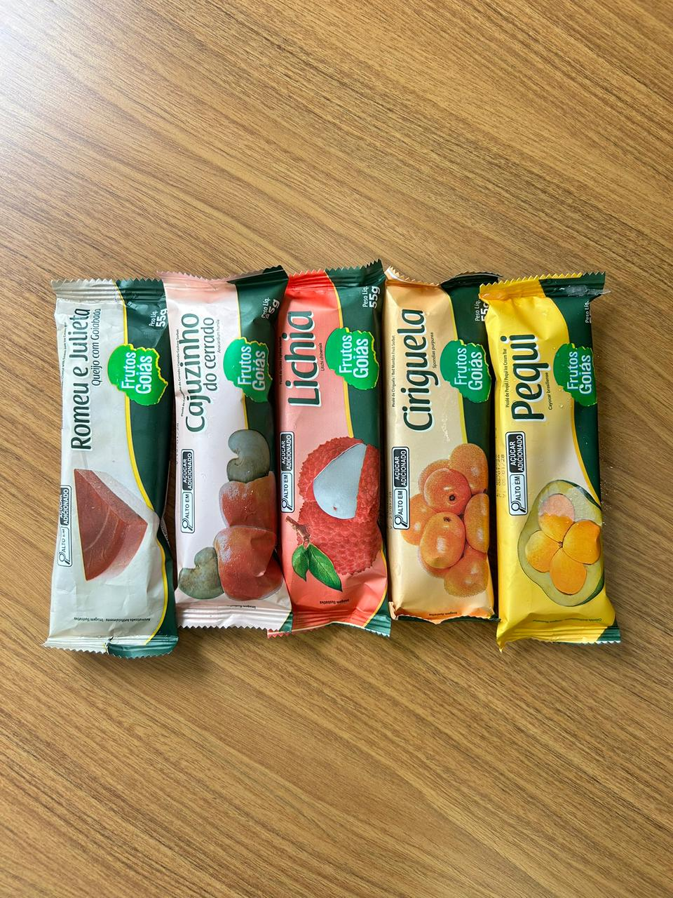

Bem-vindo(a) à nossa loja
Frutos de Goiás Sorocaba
Inauguramos em 22/01 no coração da Cidade
A Frutos de Goiás nasceu inspirada na Cidade de Goiás e nas frutas do cerrado — com a ideia de levar sabores marcantes, memória afetiva e alegria em cada pedacinho.
Centro — Sorocaba-SP
Sobre a nossa loja
A Frutos de Goiás Sorocaba foi pensada para ser aquela parada obrigatória: um lugar gostoso, bonito e prático para você escolher seu sabor favorito com calma — ou pedir rapidinho e receber em casa.
A marca Frutos de Goiás se destaca por trabalhar com frutas selecionadas e por ter muita variedade de produtos e sabores (são dezenas e dezenas de opções). Aqui em Sorocaba, a gente trouxe essa experiência para o Centro, com atendimento próximo e foco em qualidade.
Se você está procurando sorveteria no Centro de Sorocaba, picolés em Sorocaba ou uma opção diferente para sobremesa, vem conhecer a loja na Rua da Penha, 652 — ou peça pelo delivery.
Fotos da loja






Onde estamos
Rua da Penha, 652
Centro — Sorocaba-SP
Fácil acesso no Centro. Perfeito para uma pausa rápida, uma sobremesa pós-almoço ou aquele momento de recompensa no fim do dia.